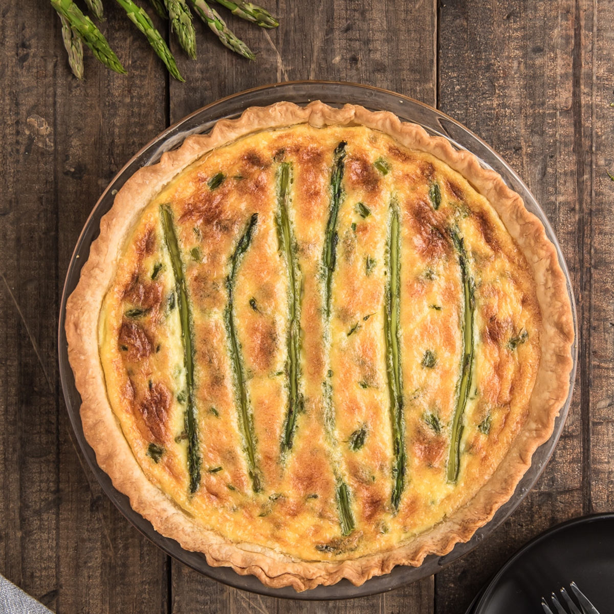

Asparagus Quiche

Ingredients
- 1 pre-made unbaked pie crust
- 15-20 asparagus stalks (depending if you use the whole stalks on top)
- 4 large eggs (room temperature)
- 1 cup + 1 tablespoon shredded gruyere cheese (128 grams total)
- 1½ cups cream whole/heavy or whipping cream at least 30% fat content
- ½ cup milk (2% or whole milk)
- ¼ teaspoon salt
- ¼ teaspoon pepper
- 1 tablespoon melted butter
Steps
- Pre-heat oven to 180C
- If you buy really thick asparagus then you might want to peel the outside woody part with a potato peeler. Snap off the tough base of each spear, this is usually around the bottom third of the spear, where the stem starts to turn tender. Keep only the tender part. Be sure to leave 4-5 spears whole for the top of the quiche, this is optional. Cut the spears into ¼ inch pieces, then boil or steam asparagus in a large skillet or pan over medium heat for approximately 10 minutes. Drain and set aside.
- Cut the spears into ¼ inch pieces, then boil or steam asparagus in a large skillet or pan over medium heat for approximately 10 minutes. Drain and set aside. The whole pieces can be left raw.
- In a 10 inch (26 cm) pie plate, place the pre made (or homemade) pie pastry evenly in the plate, trim any excess dough and crimp the edges, brush with the melted butter, and spread the steamed asparagus on top.
- In a medium bowl, whisk together the eggs, cream, milk, salt and pepper stir in grated cheese.
- Pour the egg mixture over the asparagus
- Bake for 15 minutes then turn oven down to 160C continue to bake for approximately 30 – 40 minutes. Quiche will be cooked when a knife inserted comes out clean. Let stand 5-10 minutes before serving.